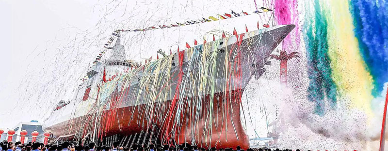
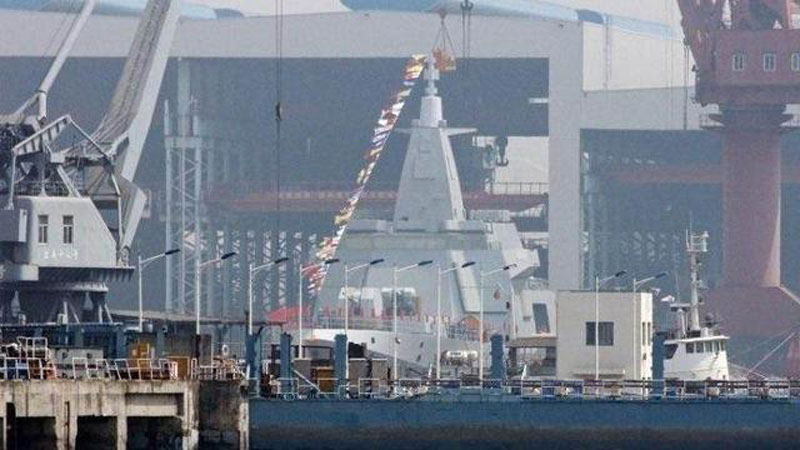

张召忠评055大驱：中国军舰100多年来首次亚洲第一
去年6月28日，055大驱在上海江南造船厂下水。055大驱目前是我国也是亚洲地区最大的驱逐舰。
作为中国航母的“带刀护卫”，人们对于055大驱关注甚至超过了“辽宁舰”和国产航母本身。也是使得以前中国最先进的052D导弹驱逐舰马上变成了“过气网红”。一年以来，这一型新晋网红又给大家带来了哪些惊喜？下面继续盘点2018年中国055导弹驱逐舰大事记。
2018年4月28日，第二艘055导弹驱逐舰同样在江南造船厂下水，异常低调~
2018年7月3日，大连造船厂两艘万吨级055驱逐舰同时下水！除了下水的055驱逐舰，周围岸边还近距离停泊着数艘准备交付海军的052D驱逐舰，刚刚腾空的船坞边上还有新的055驱逐舰的分段等待下一步建造。
这两艘055大驱同时下水也意味着从2017年6月28日到今年7月初，仅在一年的时间内，中国就制造出了3艘万吨级导弹驱逐舰，体现了我国在大型驱逐舰工程技术上的成熟，也说明了这几艘驱逐舰在同时建造。
2018年8月24日上午，由江南长兴造船厂建造的055型导弹驱逐舰首舰在拖船牵引下离开长兴岛舾装码头，开始首次航行试验，并在8月26日完成首次海试回港。
2018年，三艘055大驱的下水使中国海军向现代化迈进了一大步，也在中国国防历史上留下了浓墨重彩的一笔。有了航母、有了大驱，现在只待扬帆起航。
— THE END —- 01张召忠评055大驱：中国军舰100多年来首次亚洲第一
- 02美智库从六大方面对比中美空军：中国目标是战则必胜
- 03特朗普突然变卦大砍军费 被警告“美军要败给中国”
- 04外媒公布全球军力排行：中国仍第3 韩国比日德还靠前
- 05中国歼20战机为何产能仍未提高 仅增加生产线还不够
- 06中国第10艘052D舰服役 或植入新技术为052E舰gregfregregr做铺垫
- 07中国15新轻坦有两大优势或令96A失宠 运20能空运2辆
- 08巴铁展示枭龙战机强大攻击力 8款中国弹药集体亮相
- 09中国"战略空军"王牌武器已装备3个师 曾38次赴西太...
- 10普京新座驾耗资1.92亿美元 外媒：它是行走的碉堡